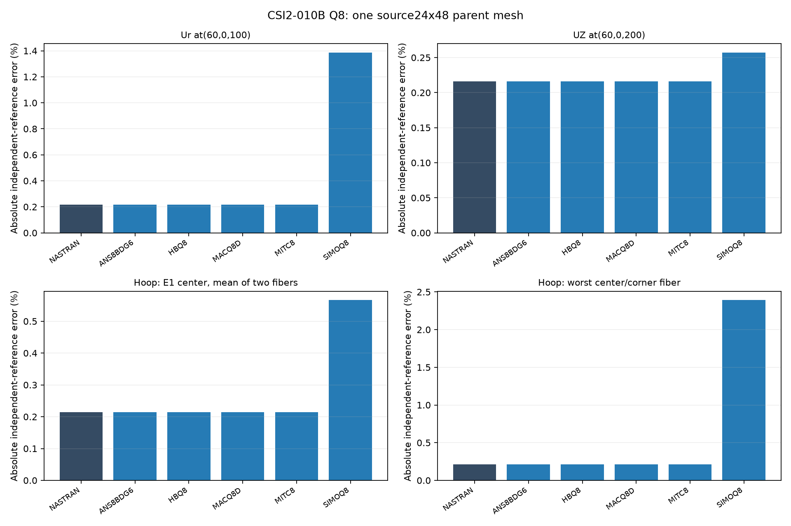
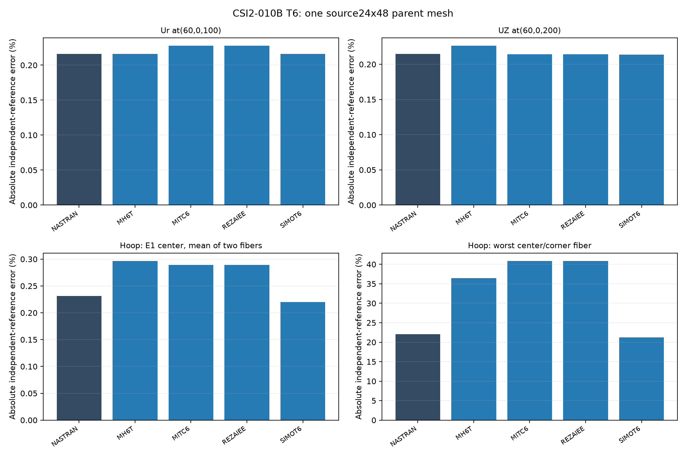

Ary · Independent Researcher · Personal Research · Rev 5 · 20 October 2026
This supersedes the invalid 2-005 A/B plate overlays and older 2-009 unsupported-foundation figures. Includes available published data and diagnostic curves with explicit status.
f=1/T, not CSI period-based percentage errors.| CSI | Output | Independent reference | Units | Qualification / source |
|---|---|---|---|---|
| 2-001 | sigma XX / YY; XY | 1333.333333 / 1333.333333; 400 | psi | Global basic frame; zero quantities use absolute residual; case |
| 2-002 A/E LC1 | Mean tip Ux | 0.000030 | in | Selected midpoint SPC126; fixed source meshes; case |
| 2-002 A/E LC2 | Mean tip Uz | 0.1081 | in | Signed mean, joints7 and14; case |
| 2-002 A/E LC3 | Mean tip Uy | 0.4321 | in | Signed mean, joints7 and14; case |
| 2-002 A/E LC4 | Mean absolute tip Uy | 0.00341 | in | Twist; case |
| 2-002 A/E LC5 | Mean absolute tip Ux | 0.000900 | in | In-plane moment; case |
| 2-002 A/E LC6 | Mean tip Rz | 0.03600 | rad | Out-of-plane moment; case |
| 2-003 | Mean tip Uy IN / Uz OUT | 0.0886 / 0.5004 | in | Q8 full clamp; T6 support parity pending; alternative OUT0.4546 torsional correction is separate; case |
| 2-004 | Mean tip Uy IN / Uz OUT | 0.005429 / 0.001749 | in | Original three tip nodes; source-point and quadratic-line loads labelled separately; case |
| 2-005 C simple uniform | Absolute center Uz | 12.97 | in | Quarter of2×10-in full plate; case |
| 2-005 C simple point | Absolute center Uz | 16.95 | in | Same geometry; case |
| 2-005 D fixed uniform | Absolute center Uz | 2.60 | in | Same geometry; case |
| 2-005 D fixed point | Absolute center Uz | 7.25 | in | Same geometry; case |
| 2-006 | Free-edge Uz | −0.3086 | ft | Displacement target; moment-axis validation pending; case |
| 2-007 | Loaded-point Ux / Uy | +0.0940 / −0.0940 | ft | 18-degree opening;0.0924 no-opening lower bound excluded; case |
| 2-008 | Ordered frequencies1–5 | 58.038305 / 142.045455 / 355.871886 / 456.621005 / 518.134715 | Hz | 1/T from independent periods; mode MAC not verified; case |
| 2-010B | Radial Ur at(60,0,100) | +0.12414 | in | Printed independent target; exact0.1241379310; fixed24×48 polygon; case |
| 2-010B | Top Uz at(60,0,200) | −0.12414 | in | Printed independent target; exact−0.1241379310; case |
| 2-010B | Hoop stress anywhere | 60 | ksi | Pointwise fiber/corner range reported; centroid mean is a separate diagnostic; case |
| 2-012A thick | Outer-edge Uz at(2,0,0) | −0.00534 | in | Combined bending/shear; fixed6×96; Nastran recovery warnings retained; case |
| 2-013A | Ux / Uy at joint8 | 0.000132 / 0.000066 | in | Free expansion; zero stress uses absolute residual; case |
| 2-013B | sigma XX / YY | −733.33 / −733.33 | psi | Rounded reference; GPSTRESS audit; case |
| 2-014 thick A | Inner Uz / R2 | 0.01931 / 0.00352 | in / rad | CSI9×16 reference; research28×32 mesh distinct; case |
| 2-014 thick A | Outer M11 / inner M22 | −2.181 / −4.406 | kip-in/in | Local shell axes; case |
| 2-016 t=1 | Critical shear / normal stress | 425 / 1165 | ksi | Eigenvalue load-basis audit required; case |
| 2-016 t=.01 | Critical shear / normal stress | 0.0425 / 0.1165 | ksi | Nastran7340 missing output; normalization pending; case |
| 2-017 | Pcr | 127.91 | kip | Load basis and physical mode verification required; case |
Targets are independent references, not a blanket PASS. Cases2-009 and2-015 have no verified target admitted here. For2-012, the printed bending−0.00521in and shear−0.000125in are source components, not separately extracted runs.
Fixed-source results and recovery audit. All11 native OP2 runs completed. Nastran displacement errors are approximately0.216%. T6 fiber/corner hoop recovery is nonuniform; the maximum pointwise error remains visible alongside the centroid diagnostic.


Fixed-source annulus results. One6×96 mesh, simply supported inner edge including midsides. Two strict Nastran failures remain recorded; separate BAILOUT recovery outputs retain pivot warnings.
Detailed embedded values and audit


Detailed embedded values and audit

Detailed embedded values and audit


Detailed embedded values and audit


Detailed embedded values and audit


Detailed embedded values and audit


2-009 EXCLUDED (incorrect plate size/foundation); original 2-005 invalid A/B graphs SUPERSEDED; 2-002 under review for restraints/pivots; 2-016 t=.01 FAILED NASTRAN7340; native eigenvalue normalization remainsPENDING; 2-017 reference conversion conditional. No global ranking of elements is warranted by incomplete benchmarks.